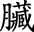
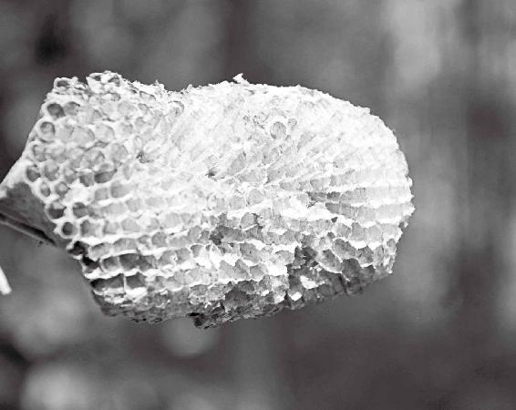

东方就是日出的地方，日出之地，主生。“东方青色，其类草木”，东方是草木绝对茂盛的地方。
曹操的诗，“东临碣石，以观沧海”，后边儿还说了一句，“百草丰茂”。曹操东临的地方就是我们现在讲的冀东，所以，《黄帝内经》上指的实际上是秦皇岛那个地方，“魏武挥鞭，东临碣石有遗篇”！
这里所说的东方还没有到达现在所谓的东三省，仅仅是胶东半岛，再到江苏、连云港这一带，以及浙东。在那个年代，中国的版图就达到这儿。
东方也叫“鱼盐之地”。我们现在说的南方，福建、广东这些靠海的地方，也都叫鱼盐之地。但当时中原的势力范围还没到这么远。
经文：
故东方之域，天地之所始生也。鱼盐之地，海滨傍水，其民食鱼而嗜咸，皆安其处，美其食。鱼者使人热中，盐者胜血，故其民皆黑色疏理。其病皆为痈疡，其治宜砭石。故砭石者，亦从东方来。
东方：天地所生之福地
古时候的“东方”指的是哪里
梁冬：上一次我们讲到黄帝向岐伯请教治病的问题，岐伯对曰“地势使然也”，然后《黄帝内经》说“故东方之域，天地之所始生也”，这里开始讲东方了，请徐老师为我们解读。
徐文兵：我们先定坐标。黄帝向岐伯请教的是“中原地区”，那个时代中原地区的东边儿是哪里呢？
《黄帝内经》的成书年代是在汉朝，也就是公元零年前后，可这门学派的思想是从上古传承下来的。所以，我们研究书中所说的那个东方之域，就要先看这个古书里的东字是怎么写的？
繁体字的“东”中间是个日，然后又套了个木，把“日”“木”套在一起，构成東方的東。这与我们中医的五行理论是对应的。
东方就是日出的地方，日出之地，主生。“东方青色，其类草木”，东方是草木绝对茂盛的地方。
东方就是日出的地方，日出之地，主生。“东方青色，其类草木”，东方是草木绝对茂盛的地方。
曹操的诗，“东临碣石，以观沧海”，后边儿还说了一句，“百草丰茂”。曹操东临的地方就是我们现在讲的冀东，所以，《黄帝内经》上指的实际上是秦皇岛那个地方，“魏武挥鞭，东临碣石有遗篇”嘛！
不过，这里所说的东方还没有到达现在所谓的东三省，仅仅是胶东半岛，再到江苏、连云港这一带，以及浙东。在那个年代，中国的版图就达到这儿。
所以，这一篇也称东方为“鱼盐之地”。我们现在说的南方，比如福建、广东这些靠海的地方，也都叫鱼盐之地。但对不起，当时中原的势力范围还没到这么远。
梁冬：而且，估计那个时候南方还都是森林呢。
徐文兵：当时的南方就是百越，我们叫南蛮，还是个不开化的地区。
当时的南方就是百越，我们叫南蛮，还是个不开化的地区。
梁冬：有一个朋友，他说广东的问题就是“开化太晚，开放太早”。广东的朋友别生气，这不是我的看法，我只是和大家分享一下。但在历史上来说，那个时候南方的确还没有开化，就跟美国最初也没开化是一样的。
徐文兵：所以，就要流放一些人往那儿去！话说回来，从这里我们可以了解到，《黄帝内经》里说的这个东方指的大概就是北起秦皇岛到连云港，再往南到浙江、温州这一带。
日本人的祖先其实也源自东方
徐文兵：东方的特点是什么？生发之气大，再一个，草木丰茂。人呢？我们通过中医五行理论可以知道，东方对应的是人的肝脏，肝气升腾，这说明东方的人肝火、肝气都比较旺盛。
我们通过中医五行理论可以知道，东方对应的是人的肝 
我们曾称日本为“东瀛”，“瀛”是秦始皇统一中国以后出现的地名。秦始皇统一天下后没事儿干了，就想长生不死，成仙！《山海经》上有传说，蓬莱往东的山上有三个仙岛，其中有个仙岛叫“瀛洲”，据说住在这里的仙人长生不死。秦始皇听信了这些话，然后就派了我的老祖宗徐福带了三千童男童女，去到“瀛洲”求仙，想得到长生不死的药。
这三千童男童女正好是秦始皇征服云南以后，从那儿弄过来的，他们就是日本人的先祖。所以，现在很多日本人经常到云南去祭祖。
这三千童男童女正好是秦始皇征服云南以后，从那儿弄过来的，他们就是日本人的先祖。所以，现在很多日本人经常到云南去祭祖。
梁冬：有一年，张艺谋拍过一部电影叫《千里走单骑》，高仓健主演的，讲的就是一个日本人在云南的故事。
徐文兵：对。你知道日本人为什么要那么做吗？他们是在追溯自己的祖先，三千童男童女的血脉是从云南过去的，都是丽江人民。
海鲜虽味美，吃法要讲究
吃海鱼太多，身体易生内热
徐文兵：从秦皇岛再往东，毛主席在诗里写道：“秦皇岛外打鱼船，一片汪洋都不见，知向谁边？”所以，这个地方的人不像中原人那样吃牛羊肉，而是吃鱼。傍海，是鱼盐之地，多的是生猛海鲜。
为什么叫它鱼盐之地呢？
一个民族或者一个文明的诞生，首先离不开水，尤其是淡水；第二个很重要的因素，就是离不开盐。比如四川这个地方出井盐。即使到现在自贡井盐还是很有名的，用井盐腌制腊肉、咸菜，特别好吃。所以东方文明的诞生，很大因素就是因为靠海，不缺盐。在东方，吹的风都有鱼腥味儿，有盐的味道，所以当地人民的饮食习惯就是吃一些海产品，也就是“嗜咸”。而且，他们饮食中不由自主地就多了股咸的味儿。平时呼吸，吸进去的都是海风！
一个民族或者一个文明的诞生，首先离不开水，尤其是淡水；第二个很重要的因素，就是离不开盐。
梁冬：没有盐，人就提不起肾气。而且，整个人浑身都是软的，脑子都动不起来，因为肾主脑髓！
没有盐，人就提不起肾气。而且，整个人浑身都是软的，脑子都动不起来，因为肾主脑髓！
徐文兵：但是盐吃多了也不好，会得高血压。而且，它还会使血脉凝气，就是令血液变得黏稠。举个例子，我们把盐水溶解在液体里，放置的时间长了，液体就容易发稠。所以，如果东方人吃盐太多，就会让自己“热中”，体内产生大量的热，发到体表上，就长疮（chuāng）、痈（yōng）、疥（jiè）子这些东西。不住在海边的人，大家平时的饮食也要特别注意，别去赶时髦天天吃海鲜，否则容易落下病根。
吃虾不吃虾眼，等于白补
徐文兵：有人问我，可不可以吃海鲜？我回答，海鲜比较凉，最好少吃点。但是，很多人就反驳我说：“哎，虾不是能壮阳吗？那个海马不是能壮阳吗？你为什么说它是凉的呢？”
有些东西你没怎么吃过或者少吃一点，吃了以后充分把它消掉、化掉，为你所用，它就能让你发热。但如果你一下子吃得太多，要么就堵在那儿，要么就过敏。
这就涉及消化能力和摄入量的问题。比如说，有些东西你没怎么吃过或者少吃一点，吃了以后充分把它消掉、化掉，为你所用，它就能让你发热。但如果你一下子吃得太多，要么就堵在那儿，要么就过敏。
所以说，海鲜这种高蛋白的东西是把双刃剑。第一，它被称为发物，吃完鱼、虾以后容易过敏，身上起很多又红、又大、又痒的包，这难道不是让人“热中”吗？还有的人吃完海鲜后，有沉寒痼（gù）冷积在身体里，不但不消化，反而让身体更“寒”了。真正吃海鲜的人，其实是有讲究的。海鲜也是一个相辅相成的矛盾体。比如吃虾，光吃那个虾段，不好消化，想好好消化，那得吃哪？
梁冬：虾皮？虾头？虾须？
徐文兵：虾头！尤其是虾的眼睛。吃虾的时候，把虾的眼睛取下来吃，就是壮阳了。要是光吃虾段，有可能吃得胃里面沉甸甸的，难以消化。因为海鲜的阴阳属性不一样。海边的渔民都是把虾捞出来，虾身子卖了，自己留着虾眼睛吃。
吃虾的时候，把虾的眼睛取下来吃，就是壮阳了。要是光吃虾段，有可能吃得胃里面沉甸甸的，难以消化。
梁冬：哈哈哈，原来是这个样子的。
吃盐多的隐患——皮肤黑、肾亏
鱼毒、热毒危害大
梁冬：“皆安其处，美其食”是什么意思，为什么要这么说呢？难道是因为这个地方物质条件比较好，所以人们不爱折腾吗？
徐文兵：有些人是非常得天地之眷顾的。上次我讲印度人，在印度那地方，往土里插根棍子都能长成一棵树，海里随便撒一网，捞上来的都是能吃的东西，而且还是高蛋白的。所以，人们不需要太多的劳作。
说到高蛋白食物，你看有些地方吃的大米，黏度特别差，因为什么？含糖分高，含蛋白质少。真正好吃的米是黏米：是黄米，黄色的。黏米就是含蛋白质相对多一点的米。补身体就得多吃蛋白质，蛋白质要是补充不够的话，身体发育就差一点。
在东方，天地之所生，啥都有，不用人操心。所以，这里的人就“安其处”，不用为自己的衣食住行而发愁，而且吃得都很美。
在东方，天地之所生，啥都有，不用人操心。所以，这里的人就“安其处”，不用为自己的衣食住行而发愁，而且吃得都很美。
梁冬：这儿的人如果要求不高的话，其实活得还可以，是吧？
徐文兵：但是呢，有一利就有一弊，这些鱼盐的东西吃多了以后，就会产生一个问题，就是后面讲的，“鱼者使人热中，盐者胜血”。
吃盐过多，皮肤就会发黑、变粗
徐文兵：注意，我们说的鱼不是淡水鱼，是海鱼。吃这种咸味重的海鱼会让人“热中”。也就是说，人如果吃这种高蛋白的东西太过了，那些鱼毒或者热毒就会慢慢地集中在人体的肠胃里。集中久了，它就会像火山爆发一样，在人的体表探出个小头，喷发。
吃咸味重的海鱼太过了，会让人“热中”。
梁冬：所以这就叫“盐者胜血，故其民皆黑色疏理。其病皆为痈（yōng）疡”吧？
“有诸内，必形诸外”，身体里面热的东西太多，一定会跑到体表。
徐文兵：对，“痈疡”就是说身上会长出疮疡和疔疮，就像火山爆发一样，冒出个小口，排出点脓，排出点血，最后收口。这就叫什么？“有诸内者，必形诸外”，身体里面热的东西太多，一定会跑到体表。
“盐者胜血”，就是说吃盐多的人血液变得黏稠，或者血的颜色会发黑。《黄帝内经》认为，咸入肾，盐是补肾的，而水又克火。所以，老吃海盐的人，皮肤的颜色也因为血液黏稠而发黑。这也是海边的人肤色偏黑的原因之一。
梁冬：肾虚，血液又黏稠，那怎么办呢？
徐文兵：那就只能调脾胃了。上面是火，下面是水，这俩人老不和，老打架，所以只能从中来调。
吃太咸的东西，会让人的血液粘稠度比较高、比较黑，故其民皆黑色疏理。
梁冬：刚才讲到，“盐者胜血”，就是伤血。吃太咸的东西，会让人的血液黏稠度比较高、比较黑，“故其民皆黑色疏理”。徐老师，请问什么叫“疏理”啊？
徐文兵：“理”是我们皮肤的纹理，古人叫腠理。我们皮肤上有很多表皮细胞，每个细胞之间都有个接缝，特别细微，但是特别透气。
如果人摄入盐分太多，那排出盐分的途径是什么呢？就是出汗。所以，对于东方人来说，如果你想让自己排汗排得更痛快、通畅一些，那就别让身体里蓄积太多的盐分。
有些人的皮肤纹理比较疏松，不那么细腻，其实就是因为吃盐太多。我见过很多西方人都是吃得比较咸，口重，皮肤毛汗孔都比较大。有的女性特意去做美容，想把毛汗孔弄得细一点，其实平时少吃点盐就对了。
有些人的皮肤纹理比较疏松，不那么细腻，其实就是因为吃盐太多。
北京人管这种吃盐太多的人叫打死卖咸盐的了。意思是说，盐多没地方放，只好都放饭里面。
口重的人容易肾亏、耳背
梁冬：现在肾虚的人比较多，他们下意识地喜欢吃咸的东西，补其肾嘛。但我们怎样才能知道自己是否肾亏呢？
徐文兵：肾亏有几个表现：一个是口重，我们说“精不足者补之以味”，这种人口味都特别重。大家一起出去吃涮肉时，一般饭店里的小料都是麻酱、香油之类的，我见过最恐怖的一个人，小料要的是香油，然后又把大约半瓶味精都放到香油里，就那么涮着吃。一看他的肾就特别虚。
肾亏有几个表现：一个是口重，我们说“精不足者补之以味”，这种人口味都特别重。
梁冬：很多年前，我留意到一个现象，现在终于理解了。我发现，但凡是夜场旁边，大多都有火锅店。男男女女，夜间出来吃宵夜，都爱吃火锅，而且特别喜欢点麻辣小龙虾吃。看来，他们都是一群肾亏的人啊！
徐文兵：对，肾亏还有个表现，就是对声音不敏感。肾开窍于耳嘛！
肾亏还有个表现，就是对声音不敏感。
这种人肾亏到什么程度呢？你说话声儿小他听不见，必须得用特大的声说。比如说到了一个夜店，普通人觉得震耳欲聋的，但人家却安之若素。这说明他的耳朵已经虚到特别严重的地步了。我见过好多搞摇滚的人，整天就在那儿自己震自己，震到自己肾亏，肾亏精不足，然后就靠吸毒来提神。
梁冬：我认识一对老夫妻，这个老太太告诉我，她耳朵不好，后来就影响肾了。我想这很可能是老爷子晚上打呼噜造成的，她为了睡好觉，长年累月自己潜意识“关闭”耳朵的功能，结果反而影响到了肾。看来，这个肾亏问题是双向的，肾不好会伤耳朵，耳朵不好也会伤肾。
这个肾亏问题是双向的，肾不好会伤耳朵，耳朵不好也会伤肾。
东方人最容易生的毛病——“痈疡”
梁冬：“其病皆为痈疡”，这是什么意思呢？
徐文兵：住在海边的人，老吃肥甘厚味的食物，几代几代传下来，已经适应了。而现在很多人身处内陆，比如说中原、西北等地，也赶这个潮流，去吃海鲜，结果是什么？不言而喻。

东方人爱吃海鲜，身体最容易积热，长『痈疡』，医学上称为蜂窝组织炎。
有一段时间，北京流行吃水煮鱼，油大，味儿重，最后吃得很多人身上长疥子。现在医学上管这个叫蜂窝组织炎，就是说汗毛孔感染发炎，而且化脓流了出来。这种单个的疥子根比较深，它的漏管比较细，相当于钉子钉进去一样，我们就叫“疔”。有些人更严重，皮肤上的疥子是多头的，好几个脓头挤在一起，这叫什么？痈！就是挤在一起的意思。
这个疮和疡是有区别的。什么叫疡？它是“病”字边，里面一个姓杨的“杨”字那一边。如果你受外伤后没有很好地处理，表皮就很容易被细菌感染，出现化脓，这就叫“疡”！其实，你看那个繁体的“伤（伤）”和疡的字根是一样的，左边是单立人儿，右边是一撇一横，底下一个容易的“易”。而“易”加上一个病字边就是疡！通俗地说，“疡”就是伤口感染。
如果你受外伤后没有很好地处理，表皮就很容易被细菌感染，出现化脓，这就叫“疡”！
那什么叫疮呢？如果你受到了外来的伤害，伤口深到了肌肉，这个就叫疮！比如讲“疮伤”，我们内心受到很大创伤，是受创还是受伤？伤到表皮叫伤，伤到肉叫创，这个“创”再加个病字边，那是什么？流脓生疮。它不是外伤，是热中。
如果你受到了外来的伤害，伤口深到了肌肉，这个就叫疮！
像老吃海鲜的人，最后身体积了热，就从皮肤上流露出来了。这也是为什么东方人身上容易起“小火山”的原因，就是容易长痤疮、粉刺、青春痘这些东西。
梁冬：所以，我觉得中国的医生，一定要有自信！中国的肛肠科医生一定是全世界最好的医生。然也！然也！
要想除疮，就用砭石
徐文兵：再说下一句，“其治宜砭石。故砭石者亦从东方来”。
你得了疮和疡，肯定要清疮排脓！也就是说，要等这个脓长熟了，先出一个红头，然后再出个白点，最后等脓熟了，就是个脓包。
梁冬：我以为红头出了个文件呢。
徐文兵：老百姓都知道，脓包迟早有一天得挑破，你不挑它自个儿也得溃破，所以这就需要一个锋利的利器，好把这个痈、疮、疔、疽给划开，从而清疮排脓。这些脓毒卸掉了，皮肤自然就长好了。
因此，《黄帝内经》上说，“故砭石者亦从东方来”。东方有大量病人得了疮和疡，医生在给他们治的过程中，就积累了这种砭石疗法的经验。
梁冬：现在美容院里边那个用针挑破暗疮，基本就是这样的一个技术延续。
徐文兵：对，但暗疮我不赞成挑。你要是耐不住性子，急于给它挑，挑了之后，脸上就会留个永久无法愈合的疤。所以，得了暗疮的话，你一定要收敛自己的肾火。因为暗疮的这种脓和上面说的那种脓毒不同，肾火是你的真火，它不应该露出来。
那么怎么治这种痤疮呢？就是让暗疮收回去。你从外界摄入的毒，积存在体内，你得赶紧给邪气出路，让它出去。
你从外界摄入的毒，积存在体内，你得赶紧给邪气出路，让它出去。
我建议大家去读下我以前推荐过的一本书，那是我妈妈她们学中医的教科书，叫《医学心悟》。《医学心悟》是清朝程国彭写的。关于治火，他提出一个概念，叫子火和贼火。
《医学心悟》是清朝程国彭写的。关于治火，他提出一个概念，叫子火和贼火。
孩子犯错误了，你怎么办？拉回家好好教育，收敛一下就好了。那贼火呢？很多人都会觉得，杀伐赶走，怎么收拾它都不为过。
但你要是把自己的孩子当贼一样处理的话，这就大错特错了。青春痘是子火，得养。那么，我们就要厚土敛火，要补益脾胃，让它的土厚了，从而把肾冒出来那个火给压回去。
这里我们用的是补法来治子火。而对付贼火的办法，用的就是泻法了。围三缺一，给邪气一出路，这是不一样的。
梁冬：嗯，有道理，有道理。所以，大家如果得了青春痘的话，应该感到骄傲和自豪，说明你还有真火在。
大家如果得了青春痘的话，应该感到骄傲和自豪，说明你还有真火在。
徐文兵：好了，今天我们讲了《素问·异法方宜论篇第十二》的第一段，从东方来的人由于吃盐、海鲜比较多，会得疮和疡。而南方、北方、西方的人，也会因为自己的环境、饮食习惯而体质各有不同。
现在交通发达了，我们经常在外地跑，容易把自己闹个水土不服，得一些奇奇怪怪的病。理解了这些原理，我们才能避开不必要的疾病困扰。